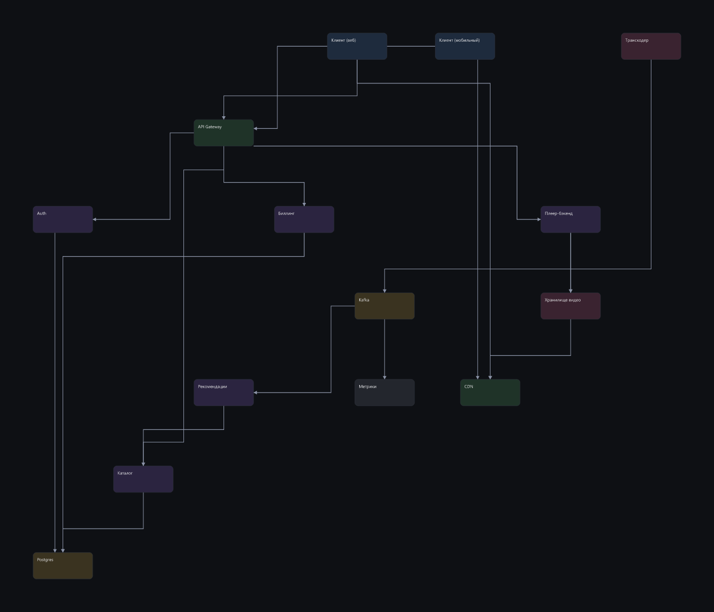
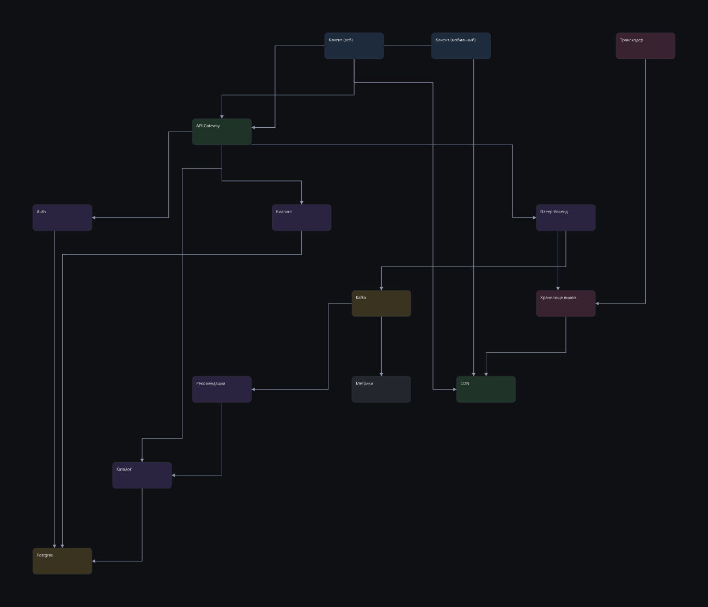
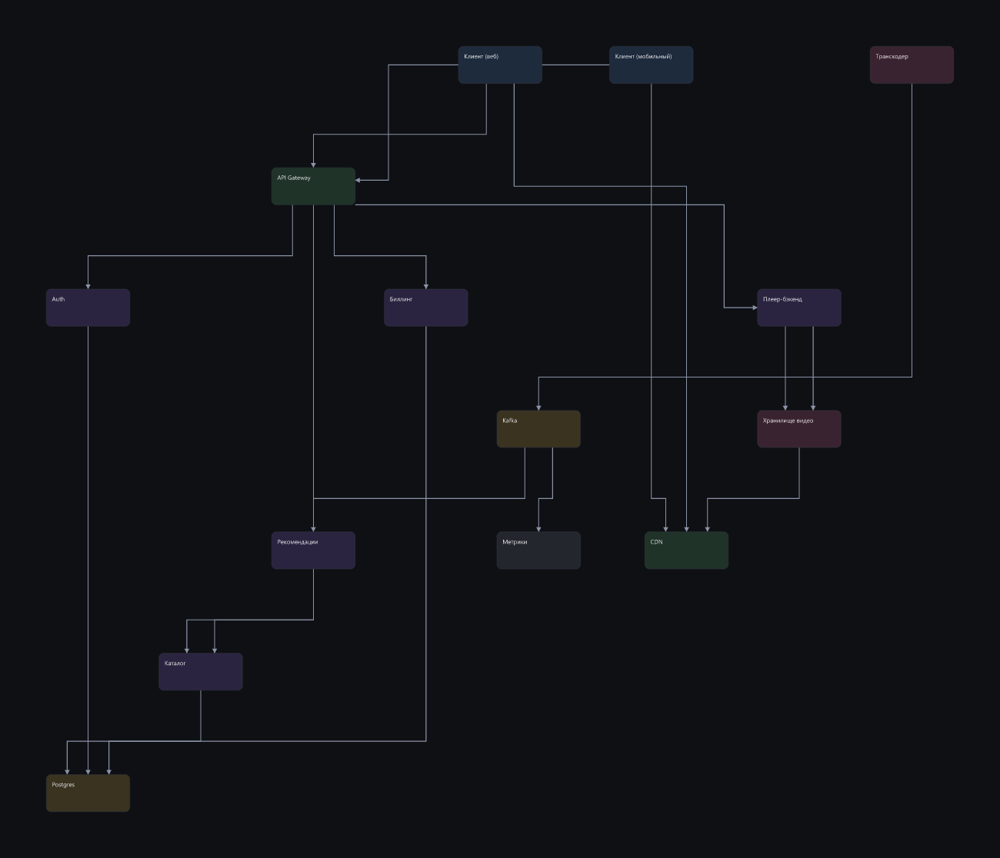
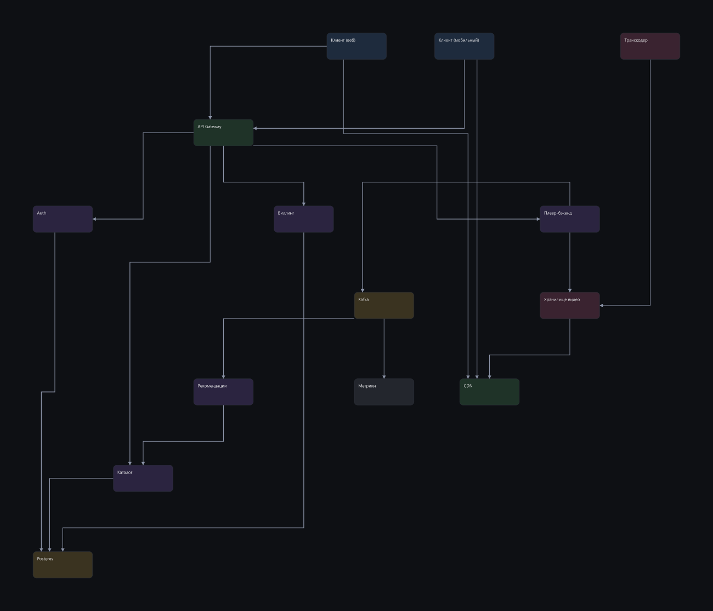

Блоки стоят одинаково во всех четырёх картинках: это наша раскладка, и она не сравнивается. Различается только то, как проведены линии.
штраф 120 · пересечений 25 · изгибов 20

штраф 62 · пересечений 12 · изгибов 18

штраф 124 · пересечений 19 · изгибов 2

штраф 29 · пересечений 7 · изгибов 17
